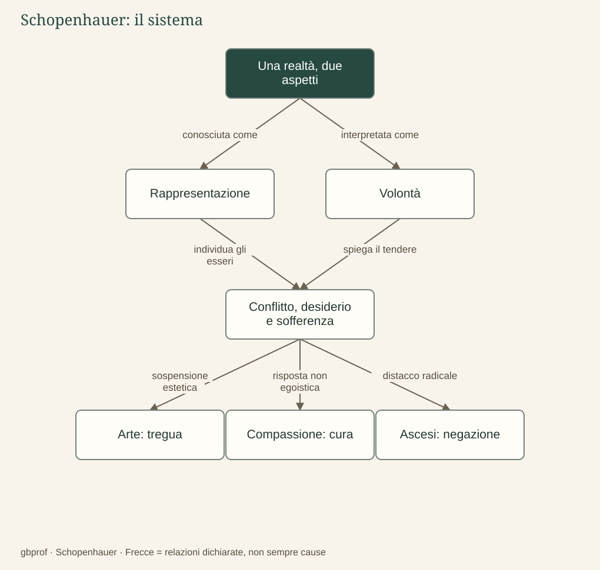

A · Comprendere Schopenhauer · 11
Ricostruire il sistema
Schopenhauer vuole cambiare il mondo o cambiare il nostro rapporto con il volere?
Il percorso è cominciato chiedendo se il mondo coincida con ciò che appare e termina interrogando il nostro modo di volere. Non si tratta di due questioni indipendenti: Schopenhauer cerca un solo pensiero capace di collegare conoscenza, natura, sofferenza, arte ed etica. Il mondo come rappresentazione è la realtà nella relazione fra soggetto e oggetto; il mondo come Volontà è quella medesima realtà interpretata nella sua essenza attraverso la chiave del corpo vissuto.
Dalla conoscenza alla sofferenza
Spazio e tempo rendono possibile la molteplicità degli individui, mentre la causalità ordina i mutamenti del mondo fenomenico. Nell’esperienza interna del corpo scopriamo però qualcosa che non si esaurisce nell’osservazione esterna: un volere che precede molte delle nostre giustificazioni razionali. Estesa alla natura, questa chiave conduce all’idea di una Volontà impersonale e priva di compimento ultimo. I singoli esseri perseguono fini, ma il mondo nel suo complesso non è orientato a renderli felici.
Il conflitto e l’instabilità del desiderio diventano così aspetti di una medesima condizione. La sofferenza non dipende soltanto dal mancato possesso di un bene, perché anche il possesso lascia aperta la struttura del bisogno. La diagnosi schopenhaueriana mette in discussione la promessa secondo la quale un incremento indefinito delle soddisfazioni produrrebbe automaticamente una felicità definitiva.
Tre risposte, tre funzioni differenti
L’arte consente una contemplazione temporaneamente libera dal servizio dell’interesse individuale. La compassione riconosce il dolore altrui come motivo dell’agire e limita l’egoismo. L’ascesi porta il distacco fino alla negazione dell’affermazione del volere. Queste risposte si possono disporre in un percorso di radicalità crescente, ma non costituiscono tre esercizi obbligatori che ogni persona compie nello stesso ordine: hanno funzioni e significati diversi.
Alla domanda iniziale possiamo ora rispondere con maggiore precisione. Il centro della liberazione schopenhaueriana riguarda il rapporto con il volere, non un progetto storico che prometta di riconciliare definitivamente il mondo. Tuttavia ciò non elimina il dovere concreto di ridurre il dolore: la compassione conserva un effetto reale sulla vita comune. Cambiare il rapporto con il volere non significa necessariamente abbandonare gli altri.
Comprendere senza rinunciare al giudizio
Un sistema filosofico si studia ricostruendone la forza e individuandone i passaggi discutibili. È legittimo chiedere se l’analogia dal corpo al cosmo sia convincente, se ogni piacere sia soltanto cessazione di un male, oppure se la compassione abbia bisogno dell’unità metafisica per possedere valore. Sono questioni che preparano il confronto con la letteratura, perché autori diversi riconoscono la fragilità umana senza elaborare la stessa risposta.
Nel secondo percorso incontreremo quindi un problema comune e differenze decisive. Non partiremo da una classifica di pessimisti: seguiremo ciò che gli autori rendono pensabile quando viene meno la garanzia di un universo provvidenziale. Solo dopo questa ricerca potremo confrontare costruzione del significato, liberazione dal desiderio e solidarietà.
Dopo la lettura
Mappa di sintesi


Leggi la mappa in forma testuale
- Una realtà, due aspetti conosciuta come Rappresentazione.
- Una realtà, due aspetti interpretata come Volontà.
- Rappresentazione individua gli esseri Conflitto, desiderio e sofferenza.
- Volontà spiega il tendere Conflitto, desiderio e sofferenza.
- Conflitto, desiderio e sofferenza sospensione estetica Arte: tregua.
- Conflitto, desiderio e sofferenza risposta non egoistica Compassione: cura.
- Conflitto, desiderio e sofferenza distacco radicale Ascesi: negazione.
Fermati sul problema
Quale relazione fra arte, compassione e ascesi è corretta?
Confronta il tuo ragionamento
Tregua dell’interesse, superamento dell’egoismo e negazione del volere hanno funzioni distinte. Le tre risposte possono essere ordinate per radicalità, ma non sono un programma biografico necessario.